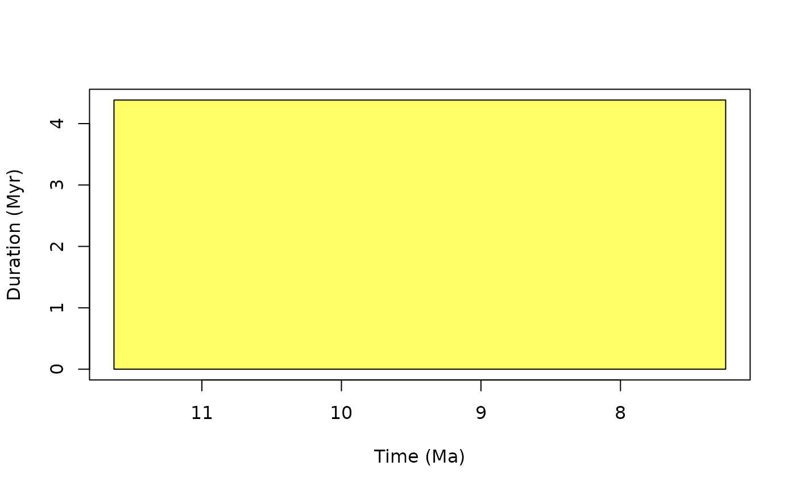
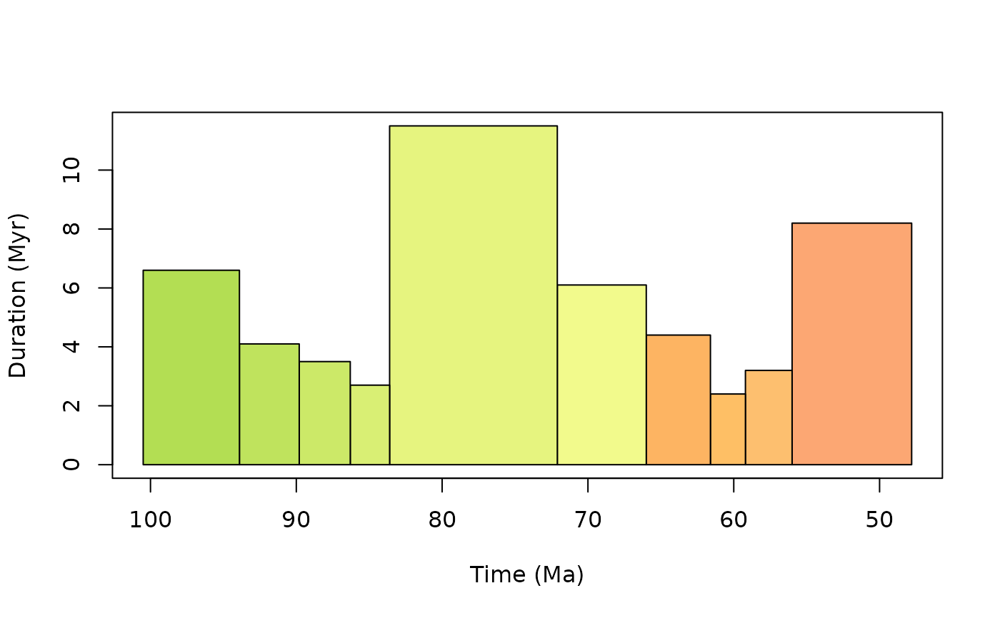
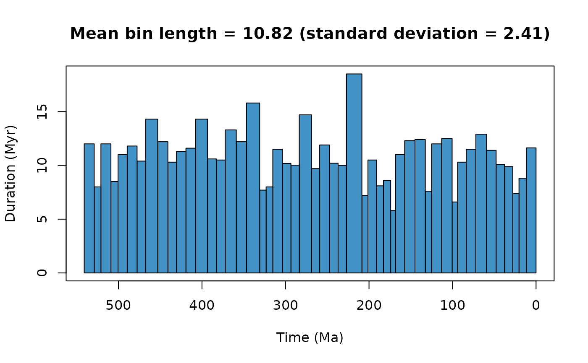

A function to generate time bins for a given study interval. This function is flexible in that either stage-level or higher stratigraphic-level (period) time bins can be called. In addition, near equal-length time bins can be generated by grouping stages together. For example, for 10 Myr as a target bin size, the function will generate groups of bins that have a mean bin length close to 10 Myr. However, users may also want to consider grouping stages based on other reasoning e.g. availability of outcrop (see Dean et al. (2020); doi:10.1111/pala.12492 ).
Usage
time_bins(
interval = c("Fortunian", "Meghalayan"),
rank = "stage",
size = NULL,
assign = NULL,
scale = "GTS2020",
plot = FALSE
)Arguments
- interval
character or numeric. Interval name available inGTS2020orGTS2012. If a single interval name is provided, this interval is returned. If two interval names are provided, these intervals and those existing between are returned. If a single numeric age is provided, the interval that covers this age is returned. If two numeric ages are provided, the intervals occurring in the range of these ages are returned.- rank
character. Which stratigraphic rank is desired? Choose from: "stage", "epoch", "period", "era", and "eon".- size
numeric. If equal-length time bins are desired, specify the length in millions of years (Myr) of the time bins desired.- assign
numeric. A numeric vector of age estimates to use to assign to bins of a given size. If assign is specified, a numeric vector is returned of the midpoint age of the specified bins. Note this is the simplified approach of assignment inpalaeoverse. Seepalaeoverse::bin_time()for a wider range of binning methods- scale
character. Specify the desired geological timescale to be used "GTS2020" or "GTS2012". "GTS2020" is the default.- plot
logical. Should a plot of time bins be generated?
Value
A dataframe of time bins for the specified intervals or a
list with a dataframe of time bins and a named numeric
vector (bin number) of binned age estimates (midpoint of specified bins) if assign is specified.
Details
This function uses the Geological Timescale 2020 and the Geological Timescale 2012 (depending on user specification). Additional information on each timescale and source can be accessed via:
Available intervals names are also accessible via
GTS2020$interval_name or GTS2012$interval_name. Data of the
Geological Timescale 2020 and 2012 were compiled by Lewis A. Jones
(2022-07-02).
Examples
#Using numeric age
time_bins(interval = 10, plot = TRUE)

#> bin interval_name max_ma mid_ma min_ma duration_myr rank
#> 11 1 Tortonian 11.63 9.438 7.246 4.384 stage
#Using numeric age range
time_bins(interval = c(50, 100), plot = TRUE)

#> bin interval_name max_ma mid_ma min_ma duration_myr rank
#> 30 1 Cenomanian 100.5 97.20 93.9 6.6 stage
#> 29 2 Turonian 93.9 91.85 89.8 4.1 stage
#> 28 3 Coniacian 89.8 88.05 86.3 3.5 stage
#> 27 4 Santonian 86.3 84.95 83.6 2.7 stage
#> 26 5 Campanian 83.6 77.85 72.1 11.5 stage
#> 25 6 Maastrichtian 72.1 69.05 66.0 6.1 stage
#> 24 7 Danian 66.0 63.80 61.6 4.4 stage
#> 23 8 Selandian 61.6 60.40 59.2 2.4 stage
#> 22 9 Thanetian 59.2 57.60 56.0 3.2 stage
#> 21 10 Ypresian 56.0 51.90 47.8 8.2 stage
#Using a single interval name
time_bins(interval = c("Maastrichtian"), plot = TRUE)
#> bin interval_name max_ma mid_ma min_ma duration_myr rank
#> 25 1 Maastrichtian 72.1 69.05 66 6.1 stage
#Using a range of intervals and near-equal duration bins
time_bins(interval = c("Fortunian", "Meghalayan"), size = 10, plot = TRUE)
#> Target equal length time bins was set to 10.02 Myr.
#> Generated time bins have a mean length of 10.82 Myr and a standard deviation of 2.41 Myr.

#> bin max_ma mid_ma min_ma duration_myr grouping_rank
#> 50 1 541.00 535.000 529.00 12.00 stage
#> 49 2 529.00 525.000 521.00 8.00 stage
#> 48 3 521.00 515.000 509.00 12.00 stage
#> 47 4 509.00 504.750 500.50 8.50 stage
#> 46 5 500.50 495.000 489.50 11.00 stage
#> 45 6 489.50 483.600 477.70 11.80 stage
#> 44 7 477.70 472.500 467.30 10.40 stage
#> 43 8 467.30 460.150 453.00 14.30 stage
#> 42 9 453.00 446.900 440.80 12.20 stage
#> 41 10 440.80 435.650 430.50 10.30 stage
#> 40 11 430.50 424.850 419.20 11.30 stage
#> 39 12 419.20 413.400 407.60 11.60 stage
#> 38 13 407.60 400.450 393.30 14.30 stage
#> 37 14 393.30 388.000 382.70 10.60 stage
#> 36 15 382.70 377.450 372.20 10.50 stage
#> 35 16 372.20 365.550 358.90 13.30 stage
#> 34 17 358.90 352.800 346.70 12.20 stage
#> 33 18 346.70 338.800 330.90 15.80 stage
#> 32 19 330.90 327.050 323.20 7.70 stage
#> 31 20 323.20 319.200 315.20 8.00 stage
#> 30 21 315.20 309.450 303.70 11.50 stage
#> 29 22 303.70 298.610 293.52 10.18 stage
#> 28 23 293.52 288.510 283.50 10.02 stage
#> 27 24 283.50 276.150 268.80 14.70 stage
#> 26 25 268.80 263.950 259.10 9.70 stage
#> 25 26 259.10 253.150 247.20 11.90 stage
#> 24 27 247.20 242.100 237.00 10.20 stage
#> 23 28 237.00 232.000 227.00 10.00 stage
#> 22 29 227.00 217.750 208.50 18.50 stage
#> 21 30 208.50 204.900 201.30 7.20 stage
#> 20 31 201.30 196.050 190.80 10.50 stage
#> 19 32 190.80 186.750 182.70 8.10 stage
#> 18 33 182.70 178.400 174.10 8.60 stage
#> 17 34 174.10 171.200 168.30 5.80 stage
#> 16 35 168.30 162.800 157.30 11.00 stage
#> 15 36 157.30 151.150 145.00 12.30 stage
#> 14 37 145.00 138.800 132.60 12.40 stage
#> 13 38 132.60 128.800 125.00 7.60 stage
#> 12 39 125.00 119.000 113.00 12.00 stage
#> 11 40 113.00 106.750 100.50 12.50 stage
#> 10 41 100.50 97.200 93.90 6.60 stage
#> 9 42 93.90 88.750 83.60 10.30 stage
#> 8 43 83.60 77.850 72.10 11.50 stage
#> 7 44 72.10 65.650 59.20 12.90 stage
#> 6 45 59.20 53.500 47.80 11.40 stage
#> 5 46 47.80 42.755 37.71 10.09 stage
#> 4 47 37.71 32.765 27.82 9.89 stage
#> 3 48 27.82 24.130 20.44 7.38 stage
#> 2 49 20.44 16.035 11.63 8.81 stage
#> 1 50 11.63 5.815 0.00 11.63 stage
#> intervals
#> 50 Fortunian
#> 49 Stage 2
#> 48 Stage 4, Stage 3
#> 47 Drumian, Wuliuan
#> 46 Jiangshanian, Paibian, Guzhangian
#> 45 Tremadocian, Stage 10
#> 44 Dapingian, Floian
#> 43 Sandbian, Darriwilian
#> 42 Rhuddanian, Hirnantian, Katian
#> 41 Sheinwoodian, Telychian, Aeronian
#> 40 Pridoli, Ludfordian, Gorstian, Homerian
#> 39 Pragian, Lochkovian
#> 38 Emsian
#> 37 Givetian, Eifelian
#> 36 Frasnian
#> 35 Famennian
#> 34 Tournaisian
#> 33 Visean
#> 32 Serpukhovian
#> 31 Bashkirian
#> 30 Kasimovian, Moscovian
#> 29 Asselian, Gzhelian
#> 28 Artinskian, Sakmarian
#> 27 Roadian, Kungurian
#> 26 Capitanian, Wordian
#> 25 Olenekian, Induan, Changhsingian, Wuchiapingian
#> 24 Ladinian, Anisian
#> 23 Carnian
#> 22 Norian
#> 21 Rhaetian
#> 20 Sinemurian, Hettangian
#> 19 Pliensbachian
#> 18 Toarcian
#> 17 Bajocian, Aalenian
#> 16 Oxfordian, Callovian, Bathonian
#> 15 Tithonian, Kimmeridgian
#> 14 Valanginian, Berriasian
#> 13 Barremian, Hauterivian
#> 12 Aptian
#> 11 Albian
#> 10 Cenomanian
#> 9 Santonian, Coniacian, Turonian
#> 8 Campanian
#> 7 Selandian, Danian, Maastrichtian
#> 6 Ypresian, Thanetian
#> 5 Bartonian, Lutetian
#> 4 Rupelian, Priabonian
#> 3 Aquitanian, Chattian
#> 2 Serravallian, Langhian, Burdigalian
#> 1 Meghalayan, Northgrippian, Greenlandian, Upper Pleistocene, Chibanian, Calabrian, Gelasian, Piacenzian, Zanclean, Messinian, Tortonian
#Assign bins based on given age estimates
time_bins(interval = c("Fortunian", "Meghalayan"), assign = c(232, 167, 33))
#> $Bins
#> bin interval_name rank max_ma mid_ma min_ma duration_myr font
#> 1 1 Meghalayan stage 0.0042 0.00210 0.0000 0.0042 black
#> 2 2 Northgrippian stage 0.0082 0.00620 0.0042 0.0040 black
#> 3 3 Greenlandian stage 0.0117 0.00995 0.0082 0.0035 black
#> 4 4 Upper Pleistocene stage 0.1290 0.07035 0.0117 0.1173 black
#> 5 5 Chibanian stage 0.7740 0.45150 0.1290 0.6450 black
#> 6 6 Calabrian stage 1.8000 1.28700 0.7740 1.0260 black
#> 7 7 Gelasian stage 2.5800 2.19000 1.8000 0.7800 black
#> 8 8 Piacenzian stage 3.6000 3.09000 2.5800 1.0200 black
#> 9 9 Zanclean stage 5.3330 4.46650 3.6000 1.7330 black
#> 10 10 Messinian stage 7.2460 6.28950 5.3330 1.9130 black
#> 11 11 Tortonian stage 11.6300 9.43800 7.2460 4.3840 black
#> 12 12 Serravallian stage 13.8200 12.72500 11.6300 2.1900 black
#> 13 13 Langhian stage 15.9700 14.89500 13.8200 2.1500 black
#> 14 14 Burdigalian stage 20.4400 18.20500 15.9700 4.4700 black
#> 15 15 Aquitanian stage 23.0300 21.73500 20.4400 2.5900 black
#> 16 16 Chattian stage 27.8200 25.42500 23.0300 4.7900 black
#> 17 17 Rupelian stage 33.9000 30.86000 27.8200 6.0800 black
#> 18 18 Priabonian stage 37.7100 35.80500 33.9000 3.8100 black
#> 19 19 Bartonian stage 41.2000 39.45500 37.7100 3.4900 black
#> 20 20 Lutetian stage 47.8000 44.50000 41.2000 6.6000 black
#> 21 21 Ypresian stage 56.0000 51.90000 47.8000 8.2000 black
#> 22 22 Thanetian stage 59.2000 57.60000 56.0000 3.2000 black
#> 23 23 Selandian stage 61.6000 60.40000 59.2000 2.4000 black
#> 24 24 Danian stage 66.0000 63.80000 61.6000 4.4000 black
#> 25 25 Maastrichtian stage 72.1000 69.05000 66.0000 6.1000 black
#> 26 26 Campanian stage 83.6000 77.85000 72.1000 11.5000 black
#> 27 27 Santonian stage 86.3000 84.95000 83.6000 2.7000 black
#> 28 28 Coniacian stage 89.8000 88.05000 86.3000 3.5000 black
#> 29 29 Turonian stage 93.9000 91.85000 89.8000 4.1000 black
#> 30 30 Cenomanian stage 100.5000 97.20000 93.9000 6.6000 black
#> 31 31 Albian stage 113.0000 106.75000 100.5000 12.5000 black
#> 32 32 Aptian stage 125.0000 119.00000 113.0000 12.0000 black
#> 33 33 Barremian stage 129.4000 127.20000 125.0000 4.4000 black
#> 34 34 Hauterivian stage 132.6000 131.00000 129.4000 3.2000 black
#> 35 35 Valanginian stage 139.8000 136.20000 132.6000 7.2000 black
#> 36 36 Berriasian stage 145.0000 142.40000 139.8000 5.2000 black
#> 37 37 Tithonian stage 152.1000 148.55000 145.0000 7.1000 black
#> 38 38 Kimmeridgian stage 157.3000 154.70000 152.1000 5.2000 black
#> 39 39 Oxfordian stage 163.5000 160.40000 157.3000 6.2000 black
#> 40 40 Callovian stage 166.1000 164.80000 163.5000 2.6000 black
#> 41 41 Bathonian stage 168.3000 167.20000 166.1000 2.2000 black
#> 42 42 Bajocian stage 170.3000 169.30000 168.3000 2.0000 black
#> 43 43 Aalenian stage 174.1000 172.20000 170.3000 3.8000 black
#> 44 44 Toarcian stage 182.7000 178.40000 174.1000 8.6000 black
#> 45 45 Pliensbachian stage 190.8000 186.75000 182.7000 8.1000 white
#> 46 46 Sinemurian stage 199.3000 195.05000 190.8000 8.5000 white
#> 47 47 Hettangian stage 201.3000 200.30000 199.3000 2.0000 white
#> 48 48 Rhaetian stage 208.5000 204.90000 201.3000 7.2000 black
#> 49 49 Norian stage 227.0000 217.75000 208.5000 18.5000 black
#> 50 50 Carnian stage 237.0000 232.00000 227.0000 10.0000 black
#> 51 51 Ladinian stage 242.0000 239.50000 237.0000 5.0000 white
#> 52 52 Anisian stage 247.2000 244.60000 242.0000 5.2000 white
#> 53 53 Olenekian stage 251.2000 249.20000 247.2000 4.0000 white
#> 54 54 Induan stage 251.9020 251.55100 251.2000 0.7020 white
#> 55 55 Changhsingian stage 254.1400 253.02100 251.9020 2.2380 black
#> 56 56 Wuchiapingian stage 259.1000 256.62000 254.1400 4.9600 black
#> 57 57 Capitanian stage 265.1000 262.10000 259.1000 6.0000 black
#> 58 58 Wordian stage 268.8000 266.95000 265.1000 3.7000 black
#> 59 59 Roadian stage 272.9500 270.87500 268.8000 4.1500 black
#> 60 60 Kungurian stage 283.5000 278.22500 272.9500 10.5500 black
#> 61 61 Artinskian stage 290.1000 286.80000 283.5000 6.6000 black
#> 62 62 Sakmarian stage 293.5200 291.81000 290.1000 3.4200 black
#> 63 63 Asselian stage 298.9000 296.21000 293.5200 5.3800 black
#> 64 64 Gzhelian stage 303.7000 301.30000 298.9000 4.8000 black
#> 65 65 Kasimovian stage 307.0000 305.35000 303.7000 3.3000 black
#> 66 66 Moscovian stage 315.2000 311.10000 307.0000 8.2000 black
#> 67 67 Bashkirian stage 323.2000 319.20000 315.2000 8.0000 black
#> 68 68 Serpukhovian stage 330.9000 327.05000 323.2000 7.7000 black
#> 69 69 Visean stage 346.7000 338.80000 330.9000 15.8000 black
#> 70 70 Tournaisian stage 358.9000 352.80000 346.7000 12.2000 black
#> 71 71 Famennian stage 372.2000 365.55000 358.9000 13.3000 black
#> 72 72 Frasnian stage 382.7000 377.45000 372.2000 10.5000 black
#> 73 73 Givetian stage 387.7000 385.20000 382.7000 5.0000 black
#> 74 74 Eifelian stage 393.3000 390.50000 387.7000 5.6000 black
#> 75 75 Emsian stage 407.6000 400.45000 393.3000 14.3000 black
#> 76 76 Pragian stage 410.8000 409.20000 407.6000 3.2000 black
#> 77 77 Lochkovian stage 419.2000 415.00000 410.8000 8.4000 black
#> 78 78 Pridoli stage 423.0000 421.10000 419.2000 3.8000 black
#> 79 79 Ludfordian stage 425.6000 424.30000 423.0000 2.6000 black
#> 80 80 Gorstian stage 427.4000 426.50000 425.6000 1.8000 black
#> 81 81 Homerian stage 430.5000 428.95000 427.4000 3.1000 black
#> 82 82 Sheinwoodian stage 433.4000 431.95000 430.5000 2.9000 black
#> 83 83 Telychian stage 438.5000 435.95000 433.4000 5.1000 black
#> 84 84 Aeronian stage 440.8000 439.65000 438.5000 2.3000 black
#> 85 85 Rhuddanian stage 443.8000 442.30000 440.8000 3.0000 black
#> 86 86 Hirnantian stage 445.2000 444.50000 443.8000 1.4000 black
#> 87 87 Katian stage 453.0000 449.10000 445.2000 7.8000 black
#> 88 88 Sandbian stage 458.4000 455.70000 453.0000 5.4000 black
#> 89 89 Darriwilian stage 467.3000 462.85000 458.4000 8.9000 white
#> 90 90 Dapingian stage 470.0000 468.65000 467.3000 2.7000 white
#> 91 91 Floian stage 477.7000 473.85000 470.0000 7.7000 white
#> 92 92 Tremadocian stage 485.4000 481.55000 477.7000 7.7000 white
#> 93 93 Stage 10 stage 489.5000 487.45000 485.4000 4.1000 black
#> 94 94 Jiangshanian stage 494.0000 491.75000 489.5000 4.5000 black
#> 95 95 Paibian stage 497.0000 495.50000 494.0000 3.0000 black
#> 96 96 Guzhangian stage 500.5000 498.75000 497.0000 3.5000 black
#> 97 97 Drumian stage 504.5000 502.50000 500.5000 4.0000 black
#> 98 98 Wuliuan stage 509.0000 506.75000 504.5000 4.5000 black
#> 99 99 Stage 4 stage 514.0000 511.50000 509.0000 5.0000 black
#> 100 100 Stage 3 stage 521.0000 517.50000 514.0000 7.0000 black
#> 101 101 Stage 2 stage 529.0000 525.00000 521.0000 8.0000 black
#> 102 102 Fortunian stage 541.0000 535.00000 529.0000 12.0000 black
#> colour
#> 1 #FDEDEC
#> 2 #FDECE4
#> 3 #FEECDB
#> 4 #FFF2D3
#> 5 #FFF2C7
#> 6 #FFF2BA
#> 7 #FFEDB3
#> 8 #FFFFBF
#> 9 #FFFFB3
#> 10 #FFFF73
#> 11 #FFFF66
#> 12 #FFFF59
#> 13 #FFFF4D
#> 14 #FFFF41
#> 15 #FFFF33
#> 16 #FEE6AA
#> 17 #FED99A
#> 18 #FDCDA1
#> 19 #FDC091
#> 20 #FDB482
#> 21 #FCA773
#> 22 #FDBF6F
#> 23 #FEBF65
#> 24 #FDB462
#> 25 #F2FA8C
#> 26 #E6F47F
#> 27 #D9EF74
#> 28 #CCE968
#> 29 #BFE35D
#> 30 #B3DE53
#> 31 #CCEA97
#> 32 #BFE48A
#> 33 #B3DF7F
#> 34 #A6D975
#> 35 #99D36A
#> 36 #8CCD60
#> 37 #D9F1F7
#> 38 #CCECF4
#> 39 #BFE7F1
#> 40 #BFE7E5
#> 41 #B3E2E3
#> 42 #A6DDE0
#> 43 #9AD9DD
#> 44 #99CEE3
#> 45 #80C5DD
#> 46 #67BCD8
#> 47 #4EB3D3
#> 48 #E3B9DB
#> 49 #D6AAD3
#> 50 #C99BCB
#> 51 #C983BF
#> 52 #BC75B7
#> 53 #B051A5
#> 54 #A4469F
#> 55 #FCC0B2
#> 56 #FCB4A2
#> 57 #FB9A85
#> 58 #FB8D76
#> 59 #FB8069
#> 60 #E38776
#> 61 #E37B68
#> 62 #E36F5C
#> 63 #E36350
#> 64 #CCD4C7
#> 65 #BFD0C5
#> 66 #B3CBB9
#> 67 #99C2B5
#> 68 #BFC26B
#> 69 #A6B96C
#> 70 #8CB06C
#> 71 #F2EDB3
#> 72 #F2EDAD
#> 73 #F1E185
#> 74 #F1D576
#> 75 #E5D075
#> 76 #E5C468
#> 77 #E5B75A
#> 78 #E6F5E1
#> 79 #D9F0DF
#> 80 #CCECDD
#> 81 #CCEBD1
#> 82 #BFE6C3
#> 83 #BFE6CF
#> 84 #B3E1C2
#> 85 #A6DCB5
#> 86 #A6DBAB
#> 87 #99D69F
#> 88 #8CD094
#> 89 #74C69C
#> 90 #66C092
#> 91 #41B087
#> 92 #33A97E
#> 93 #E6F5C9
#> 94 #D9F0BB
#> 95 #CCEBAE
#> 96 #CCDFAA
#> 97 #BFD99D
#> 98 #B3D492
#> 99 #B3CA8E
#> 100 #A6C583
#> 101 #A6BA80
#> 102 #99B575
#>
#> $Assignation
#> 50 41 17
#> 232.00 167.20 30.86
#>